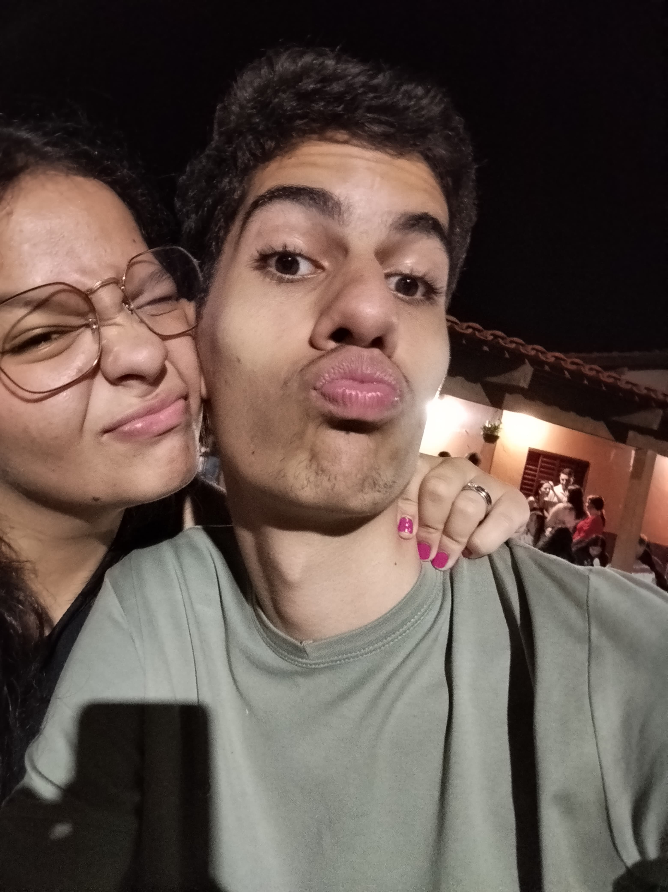

Com todo o meu amor
Obrigado por nunca deixar de estar ao meu lado, mesmo quando está tudo difícil. Eu quero viver pra sempre com sua companhia, sua amizade, e acima de tudo seu amor. EU TE AMO MINHA PRINCESINHA!
